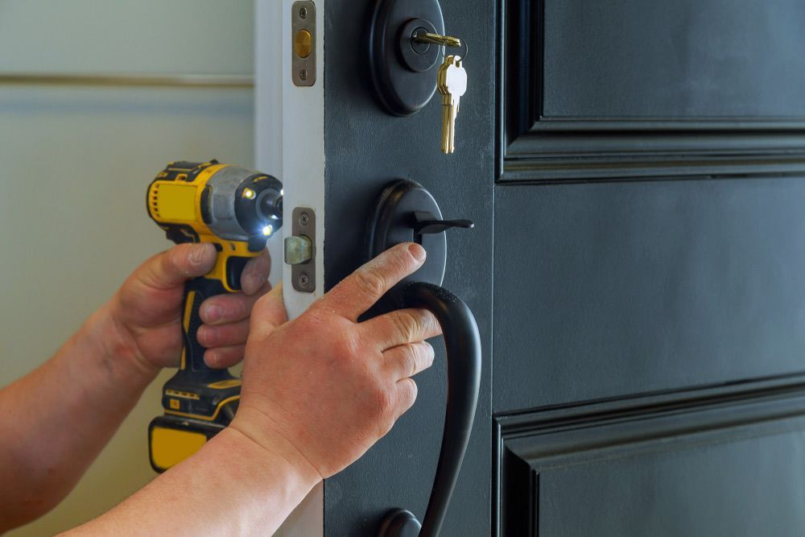
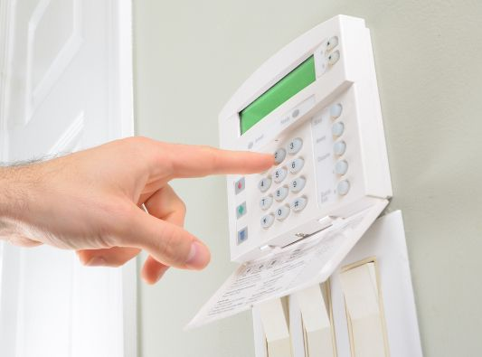

On this page
AT A GLANCE
In today's rapidly evolving security landscape, the importance of a dedicated and flexible locksmith service cannot be overstated.
Get A Free Quote Now!
Thank you for contacting SPL Security Solutions.
We will be in touch soon.

Residential, Auto & Commercial Locksmith Services
In today's rapidly evolving security landscape, the importance of a dedicated and flexible locksmith service cannot be overstated. With potential threats manifesting in various form from digital breaches to traditional lock picking, the need for comprehensive security solutions has become paramount.
At SPL Security Solutions, our ethos is centred around not just responding to the immediate demands of security but anticipating future challenges. From cutting-edge electronic access systems to traditional locksmithing, our wide array of services ensures our Yatala clients can enjoy peace of mind in knowing their assets are protected by the latest in security technology and expertise.
For more information on our locksmith services, call (07) 5588 8111.
In Yatala, our residential locksmith services provide homeowners with peace of mind through professional lock installations, repairs and rekeying. With our key duplication service, you'll never be without a spare set of keys again. And should you find yourself locked out of your home, our emergency lockout support offers fast and reliable assistance.
For businesses in Yatala, our commercial locksmith services offer comprehensive solutions to safeguard your premises. We can perform a security assessment before installing high-security locks, master key systems and access control measures to manage and monitor who enters different parts of your property. Our team is also available for emergency assistance around the clock.
Yatala drivers seeking fast and reliable automotive locksmith services will find our team ready to assist. Our experts are adept at handling a variety of car key issues—from cutting new keys to reprogramming transponder chips. Whether it's a simple spare key you need or assistance with a more complex ignition issue, our services are designed to get you back on the road with minimal hassle 24/7.
Our restricted key systems in Yatala offer businesses and organisations a better way to enhance security by ensuring keys cannot be duplicated by unauthorised parties. With patented designs at the core of each system, we provide an effective means of managing access to sensitive areas. We work closely with our clients to customise these solutions, ensuring they meet their unique security requirements.
We offer a comprehensive range of safes in Yatala that are designed to protect against theft, fire and other environmental threats. Our selection includes various sizes and locking mechanisms to meet diverse security needs for both personal and business purposes. We also provide professional installation services, ongoing maintenance and emergency unlocking assistance if you find yourself in a pickle.
Get professional guidance when it comes to selecting the right security system for your property in Yatala. Our team can help you choose the most effective products to meet your specific security needs and budget—whether that's CCTV cameras, alarm systems, access control, intercoms or a combination of each. We also offer professional installation services and ongoing maintenance.
In Yatala, we supply lock hardware including cylinder locks, sturdy deadbolts and high-security padlocks. Our products are selected to protect your property with reliability and strength.
Our door hardware range includes durable hinges, ergonomic levers and heavy-duty closers. These components ensure doors operate smoothly while enhancing security and durability for properties in Yatala.
We source high-quality door hardware, blending fire-resistant durability, smooth door closers, and stylish handles to accommodate diverse architectural aesthetics in Yatala.
24/7 Emergency Locksmith Services
Emergencies can happen at any time of day or night, which is why our team at SPL Security Solutions provides 24/7 emergency locksmith services to Yatala residents. Whether you're locked out or in need of urgent lock repairs after a break-in, our team is always ready to assist with quick response times and professional solutions.
In case of attempted or actual intrusion, our team can assess the damage to your property and provide necessary repairs or replacements to secure your entry points. With our mobile vans equipped with the latest tools and technology, we deliver on-the-spot lock replacements, rekeying and more. We're here to keep you safe and secure!

Contact Details
24/7 Emergency Locksmiths or Security Tech


Trading Hours
Retail Shop
Frequently Asked Questions
-
What is a restricted keyway?
A restricted keyway is a lock design that is patented and limited to a specific manufacturer or distributor. This restricts the duplication of keys to authorised dealers or locksmiths only, providing an additional layer of security by controlling who can copy keys. Restricted keyways make unauthorised key duplication much more difficult.
-
What should I do if my lock becomes stiff and hard to turn?
First, try cleaning the lock with a mild cleaner and a soft cloth to remove any dirt or grime. If the lock remains stiff, apply a small amount of a suitable lubricant. If the problem persists, it might be time to call a professional locksmith, as the lock could be damaged or in need of a more thorough repair.
Locksmith & Security Solutions Gold Coast, Brisbane & Northern NSW